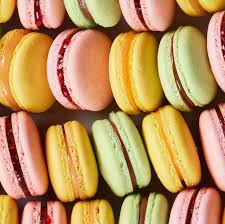

Pizza is an Italian dish that has become one of the most popular foods worldwide, consisting of a usually round, flatbread base with toppings. It is baked at a high temperature, traditionally in a wood-fired oven.
 Pastries are baked goods made from a dough of flour, fat, and water, often with sugar and other flavorings, and include sweet and savory items like pies, tarts, croissants, and éclairs. Different types of pastry doughs, such as shortcrust, puff, and choux, are distinguished by how fat is incorporated, creating textures from flaky to tender.